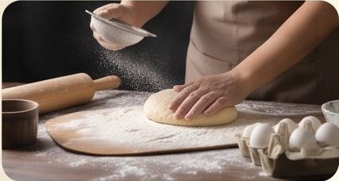

Our Story
A small home kitchen, one oven, and a big love for baking.
Velvet Crumb started as a small home kitchen with one oven and a big love for baking. Today we are a friendly neighbourhood bakery and cafe, but the way we work has not changed. Every loaf, cake and pastry is made from scratch by our own bakers, using simple, honest ingredients. We believe good baking takes time, and you can taste that time in every bite. Whether it is a weekday loaf or the cake at the centre of your celebration, we are proud to be part of your table.
We bake in small batches through the day, so nothing sits on a shelf for long. If it is on our shelf, it was made with care, most likely this morning.
See What Is BakingHow we bake
From scratch, daily
Every loaf, cake and pastry is made from scratch by our own bakers, starting early each morning.
Simple, honest ingredients
Real butter, fresh eggs and seasonal fruit. We never use frozen dough.
Time in every bite
Good baking takes time. Our doughs rise slowly and our cakes are made to order, never rushed.

Part of your table
Weekday loaves, slow weekend breakfasts, birthday cakes and office coffee runs. However Velvet Crumb reaches your table, we are glad to be there. Come and say hello at 12 Demo Lane, Sample Town, or order online for pickup and local delivery.
Contact the Bakery